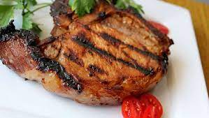

Summer Grilled Pork Chops

Description
Summer grilled pork chops is a must-try serving you should try. It's pork chops but grilled. Isn't that amazing?
It contains 673 calories, 114.6g carbohydrates, 41.6g proteins, 9g fat, 106.6mg cholestrol, 156.1mg sodium.
This serving is best had during the season present in the name, i.e, summer. It's the perfect one to choose for a family garden grilling day or for a picnic.
The flavor of pork along with the meaty texture and perfect blend of sweet and savoury is what makes it put it on our list.
Ingredients
- One and a half cups lemon juice
- One and a half cups honey
- 2 tablespoons Worcestershire sauce
- 1 clove garlic, minced
- Quarter teaspoon dried basil
- 4 center-cut pork chops, 1/2-inch thick
- salt and ground black pepper to taste
Steps
- Mix the lemon juice, honey, Worcestershire sauce, garlic, and basil together in a bowl. Pour about half the marinade into a resealable plastic zipper bag, and place the pork chops in the bag. Squeeze out the air, seal the bag, and refrigerate for at least 2 hours (overnight is best).
Refrigerate remaining marinade for basting.
- Preheat an outdoor grill for medium-high heat, and lightly oil the grate.
- Remove the chops from the bag, and discard the used marinade. Sprinkle chops with salt and black pepper.
Grill the chops until browned and the meat is no longer pink inside, 20 to 25 minutes.
Baste frequently with the reserved marinade, being sure to let the mixture cook onto the chops.
An instant-read meat thermometer inserted into the center of a chop should read at least 145 degrees F (63 degrees C).
Return to home page